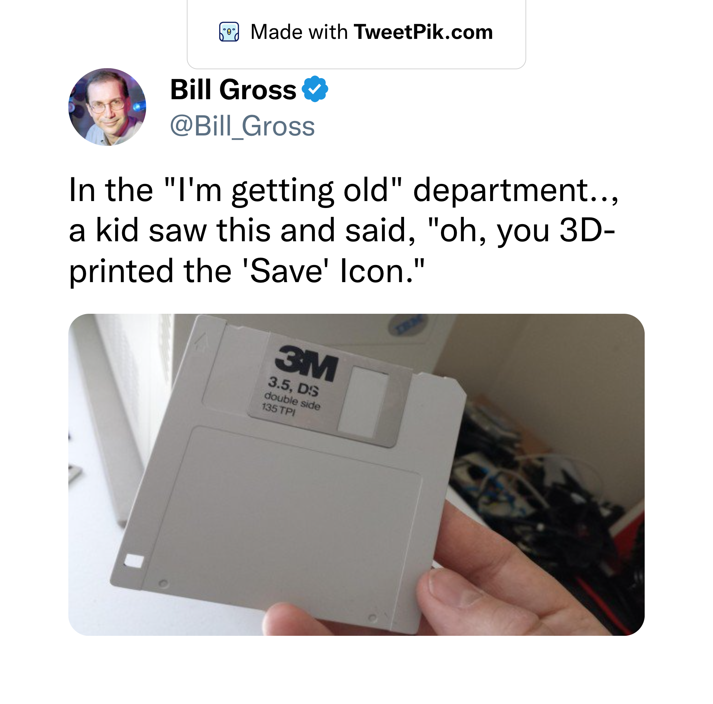

<!DOCTYPE html>


<html lang="en">
  

    <head>
      <meta charset="utf-8" />
       
      <meta name="keywords" content="agile, tdd, software engineering" />
       
      <meta
        name="viewport"
        content="width=device-width, initial-scale=1, maximum-scale=1"
      />
      
        <meta property="og:image" content="https://nickmck.net/2023/06/07/vestigial-processes/vp1.png"/>
        <meta property="og:description" content="What does the human appendix, a floppy disk and some agile processes have in common?"/>
        
      <title>Vestigial Activities |  nick dot blog</title>
  <meta name="generator" content="hexo-theme-ayer">
      
      <link rel="shortcut icon" href="/favicon.ico" />
       
<link rel="stylesheet" href="/dist/main.css">

      
<link rel="stylesheet" href="/css/fonts/remixicon.css">

      
<link rel="stylesheet" href="/css/custom.css">
 
      <script src="https://cdn.staticfile.org/pace/1.2.4/pace.min.js"></script>
       
<!-- Global site tag (gtag.js) - Google Analytics -->
<script async src="https://www.googletagmanager.com/gtag/js?id=G-KXJW9BVBJ4"></script>
<script>
  window.dataLayer = window.dataLayer || [];
  function gtag(){dataLayer.push(arguments);}
  gtag('js', new Date());
  gtag('config', 'G-KXJW9BVBJ4');
</script>

 

      <link
        rel="stylesheet"
        href="https://cdn.jsdelivr.net/npm/@sweetalert2/theme-bulma@5.0.1/bulma.min.css"
      />
      <script src="https://cdn.jsdelivr.net/npm/sweetalert2@11.0.19/dist/sweetalert2.min.js"></script>

      <!-- mermaid -->
      
      <style>
        .swal2-styled.swal2-confirm {
          font-size: 1.6rem;
        }
      </style>
    <link rel="alternate" href="/atom.xml" title="nick dot blog" type="application/atom+xml">
</head>
  </html>
</html>


<body>
  <div id="app">
    
      
    <main class="content on">
      <section class="outer">
  <article
  id="post-vestigial-processes"
  class="article article-type-post"
  itemscope
  itemprop="blogPost"
  data-scroll-reveal
>
  <div class="article-inner">
    
    <header class="article-header">
       
<h1 class="article-title sea-center" style="border-left:0" itemprop="name">
  Vestigial Activities
</h1>
 

      
    </header>
     
    <div class="article-meta">
      <a href="/2023/06/07/vestigial-processes/" class="article-date">
  <time datetime="2023-06-07T11:39:47.000Z" itemprop="datePublished">2023-06-07</time>
</a>   
<div class="word_count">
    <span class="post-time">
        <span class="post-meta-item-icon">
            <i class="ri-quill-pen-line"></i>
            <span class="post-meta-item-text"> Word count:</span>
            <span class="post-count">592</span>
        </span>
    </span>

    <span class="post-time">
        &nbsp; | &nbsp;
        <span class="post-meta-item-icon">
            <i class="ri-book-open-line"></i>
            <span class="post-meta-item-text"> Reading time≈</span>
            <span class="post-count">3 min</span>
        </span>
    </span>
</div>
 
    </div>
      
    <div class="tocbot"></div>


  
    <div class="article-entry" itemprop="articleBody">
       
  

<p>In biology Vestigial Organs <em>are rudimentary anatomical structures that are retained in a species despite having lost their primary ancestral function</em>. In agile we uncover ‘Vestigial Activities’ - tasks or steps that teams continue to perform without a clear understanding of their original purpose or relevance. This blog post explores the concept of vestigial activities in agile teams, their potential negative impact, and suggests strategies for identifying and addressing them.</p>
<p>Often steps are added to a process in response to a specific event or need. They also arise organically as part of the team’s retrospective process. In the short term these steps may add value and after a while they become ‘part of the furniture’; something the team has always done. Over time, as people come and go, the reasons for the step being added are forgotten as well as the specific problem being solved. If the activity is still quietly adding value this is well and good - but in many cases it could be actively impeding the team. </p>
<p>A pernicious form of this situation arises when attempts are made to ‘standardise’ processes across teams in large organisations. Although this is typically done with good intentions, it can inadvertently introduce a set of vestigial activities into the process. The original intent behind these activities becomes obscured, and teams may be hesitant to question or challenge the dogma of the “official” process.</p>
<p>So what’s to be done?</p>
<h2 id="Process-Ownership"><a href="#Process-Ownership" class="headerlink" title="Process Ownership"></a>Process Ownership</h2><p>Teams must own their process. I’m all for having organisational standards, principles and guidelines but at the end of the day the experiences and needs of a team are unique. Mandating a one-size-fits-all approach negates this reality. </p>
<blockquote>
<p>This does not mean that teams can’t share ideas or good practices. Or even that you can’t have a default template to get new teams started. What you should be wary of is thinking that a single set of steps will work equally well for all teams in all situations.</p>
</blockquote>
<h2 id="Continuous-Inspection-and-Improvement"><a href="#Continuous-Inspection-and-Improvement" class="headerlink" title="Continuous Inspection and Improvement"></a>Continuous Inspection and Improvement</h2><p>Owning their process means more than just being able to add and remove steps as they seem fit. It means actively interrogating each step, identifying bottlenecks and striving to improve the overall process.</p>
<p>When steps are added or removed from a team’s process there should be a specific hypotheses associated with it and a time-box set. For example, a team may hypothesize that moving step X before step Y will increase velocity and reduce rework. They can then commit to running this experiment for a defined period, such as two sprints, before conducting a thorough review.</p>
<p>If the new step adds the expected value then it can be retained. If not adjust the approach and try again. Once the process has been optimised however it is critical that the team periodically revisit the process. Does each step make sense? Do we all know why this step exists? Are there clear entry and exit conditions from each step? It can also be useful to look at the process from a quantitative perspective - how long does a work item spend in each step? Do we limit the number of items in each step?</p>
<h2 id="Conclusion"><a href="#Conclusion" class="headerlink" title="Conclusion"></a>Conclusion</h2><p>Vestigial activities can hinder the effectiveness and efficiency of agile teams. By recognizing their presence, taking ownership of the process, and actively interrogating each step, teams can identify and address these activities. Experimentation and time-boxing can help teams evaluate changes and continuously improve their processes. Agile methodologies thrive on adaptability, and by shedding vestigial activities, teams can optimize their workflows and deliver better results.</p>
 
      <!-- reward -->
      
    </div>
    

    <!-- copyright -->
    
    <div class="declare">
      <ul class="post-copyright">
        <li>
          <i class="ri-copyright-line"></i>
          <strong>Copyright： </strong>
          
          Copyright is owned by the author. For commercial reprints, please contact the author for authorization. For non-commercial reprints, please indicate the source.
          
        </li>
      </ul>
    </div>
    
    <footer class="article-footer">
       
  <ul class="article-tag-list" itemprop="keywords"><li class="article-tag-list-item"><a class="article-tag-list-link" href="/tags/Agile/" rel="tag">Agile</a></li></ul>

    </footer>
  </div>

   
  <nav class="article-nav">
    
      <a href="/2023/06/21/how-I-hire/" class="article-nav-link">
        <strong class="article-nav-caption">Previous Post</strong>
        <div class="article-nav-title">
          
            How I hire
          
        </div>
      </a>
    
    
      <a href="/2023/06/03/link-preview/" class="article-nav-link">
        <strong class="article-nav-caption">Next Post</strong>
        <div class="article-nav-title">Adding Link Preview to your Hexo Blog</div>
      </a>
    
  </nav>

  
   
<div class="gitalk" id="gitalk-container"></div>

<link rel="stylesheet" href="https://cdn.staticfile.org/gitalk/1.7.2/gitalk.min.css">


<script src="https://cdn.staticfile.org/gitalk/1.7.2/gitalk.min.js"></script>


<script src="https://cdn.staticfile.org/blueimp-md5/2.19.0/js/md5.min.js"></script>

<script type="text/javascript">
  var gitalk = new Gitalk({
    clientID: '8318211c28156a054b60',
    clientSecret: 'a3e7c2c22e61867951cbca3c52fbcc22f43dcfb8',
    repo: 'BlogComments',
    owner: 'nickmza',
    admin: ['nickmza'],
    // id: location.pathname,      // Ensure uniqueness and length less than 50
    id: md5(location.pathname),
    distractionFreeMode: false,  // Facebook-like distraction free mode
    pagerDirection: 'last'
  })

  gitalk.render('gitalk-container')
</script>

  
   
    <script src="https://cdn.staticfile.org/twikoo/1.4.18/twikoo.all.min.js"></script>
    <div id="twikoo" class="twikoo"></div>
    <script>
        twikoo.init({
            envId: ""
        })
    </script>
 
</article>

</section>
      <footer class="footer">
  <div class="outer">
    <ul>
      <li>
        Copyrights &copy;
        2015-2024
        <i class="ri-heart-fill heart_icon"></i> Nick Mckenzie
      </li>
    </ul>
    <ul>
      <li>
        
      </li>
    </ul>
    <ul>
      <li>
        
      </li>
    </ul>
    <ul>
      
    </ul>
    <ul>
      
    </ul>
    <ul>
      <li>
        <!-- cnzz统计 -->
        
        <script type="text/javascript" src='https://s9.cnzz.com/z_stat.php?id=1278069914&amp;web_id=1278069914'></script>
        
      </li>
    </ul>
  </div>
</footer>    
    </main>
    <div class="float_btns">
      <div class="totop" id="totop">
  <i class="ri-arrow-up-line"></i>
</div>

<div class="todark" id="todark">
  <i class="ri-moon-line"></i>
</div>

    </div>
    <aside class="sidebar on">
      <button class="navbar-toggle"></button>
<nav class="navbar">
  
  <div class="logo">
    <a href="/"></a>
  </div>
  
  <ul class="nav nav-main">
    
    <li class="nav-item">
      <a class="nav-item-link" href="/">Home</a>
    </li>
    
    <li class="nav-item">
      <a class="nav-item-link" href="/archives">Archives</a>
    </li>
    
    <li class="nav-item">
      <a class="nav-item-link" href="/categories">Categories</a>
    </li>
    
    <li class="nav-item">
      <a class="nav-item-link" href="/tags">Tags</a>
    </li>
    
    <li class="nav-item">
      <a class="nav-item-link" href="/Resources">Resources</a>
    </li>
    
    <li class="nav-item">
      <a class="nav-item-link" href="/about">About</a>
    </li>
    
  </ul>
</nav>
<nav class="navbar navbar-bottom">
  <ul class="nav">
    <li class="nav-item">
      
      <a class="nav-item-link nav-item-search"  title="Search">
        <i class="ri-search-line"></i>
      </a>
      
      
      <a class="nav-item-link" target="_blank" href="/atom.xml" title="RSS Feed">
        <i class="ri-rss-line"></i>
      </a>
      
    </li>
  </ul>
</nav>
<div class="search-form-wrap">
  <div class="local-search local-search-plugin">
  <input type="search" id="local-search-input" class="local-search-input" placeholder="Search...">
  <div id="local-search-result" class="local-search-result"></div>
</div>
</div>
    </aside>
    <div id="mask"></div>

<!-- #reward -->
<div id="reward">
  <span class="close"><i class="ri-close-line"></i></span>
  <p class="reward-p"><i class="ri-cup-line"></i>请我喝杯咖啡吧~</p>
  <div class="reward-box">
    
    <div class="reward-item">
      
      <span class="reward-type">支付宝</span>
    </div>
    
    
    <div class="reward-item">
      
      <span class="reward-type">微信</span>
    </div>
    
  </div>
</div>
    
<script src="/js/jquery-3.6.0.min.js"></script>
 
<script src="/js/lazyload.min.js"></script>

<!-- Tocbot -->
 
<script src="/js/tocbot.min.js"></script>

<script>
  tocbot.init({
    tocSelector: ".tocbot",
    contentSelector: ".article-entry",
    headingSelector: "h1, h2, h3, h4, h5, h6",
    hasInnerContainers: true,
    scrollSmooth: true,
    scrollContainer: "main",
    positionFixedSelector: ".tocbot",
    positionFixedClass: "is-position-fixed",
    fixedSidebarOffset: "auto",
  });
</script>

<script src="https://cdn.staticfile.org/jquery-modal/0.9.2/jquery.modal.min.js"></script>
<link
  rel="stylesheet"
  href="https://cdn.staticfile.org/jquery-modal/0.9.2/jquery.modal.min.css"
/>
<script src="https://cdn.staticfile.org/justifiedGallery/3.8.1/js/jquery.justifiedGallery.min.js"></script>

<script src="/dist/main.js"></script>

<!-- ImageViewer -->
 <!-- Root element of PhotoSwipe. Must have class pswp. -->
<div class="pswp" tabindex="-1" role="dialog" aria-hidden="true">

    <!-- Background of PhotoSwipe. 
         It's a separate element as animating opacity is faster than rgba(). -->
    <div class="pswp__bg"></div>

    <!-- Slides wrapper with overflow:hidden. -->
    <div class="pswp__scroll-wrap">

        <!-- Container that holds slides. 
            PhotoSwipe keeps only 3 of them in the DOM to save memory.
            Don't modify these 3 pswp__item elements, data is added later on. -->
        <div class="pswp__container">
            <div class="pswp__item"></div>
            <div class="pswp__item"></div>
            <div class="pswp__item"></div>
        </div>

        <!-- Default (PhotoSwipeUI_Default) interface on top of sliding area. Can be changed. -->
        <div class="pswp__ui pswp__ui--hidden">

            <div class="pswp__top-bar">

                <!--  Controls are self-explanatory. Order can be changed. -->

                <div class="pswp__counter"></div>

                <button class="pswp__button pswp__button--close" title="Close (Esc)"></button>

                <button class="pswp__button pswp__button--share" style="display:none" title="Share"></button>

                <button class="pswp__button pswp__button--fs" title="Toggle fullscreen"></button>

                <button class="pswp__button pswp__button--zoom" title="Zoom in/out"></button>

                <!-- Preloader demo http://codepen.io/dimsemenov/pen/yyBWoR -->
                <!-- element will get class pswp__preloader--active when preloader is running -->
                <div class="pswp__preloader">
                    <div class="pswp__preloader__icn">
                        <div class="pswp__preloader__cut">
                            <div class="pswp__preloader__donut"></div>
                        </div>
                    </div>
                </div>
            </div>

            <div class="pswp__share-modal pswp__share-modal--hidden pswp__single-tap">
                <div class="pswp__share-tooltip"></div>
            </div>

            <button class="pswp__button pswp__button--arrow--left" title="Previous (arrow left)">
            </button>

            <button class="pswp__button pswp__button--arrow--right" title="Next (arrow right)">
            </button>

            <div class="pswp__caption">
                <div class="pswp__caption__center"></div>
            </div>

        </div>

    </div>

</div>

<link rel="stylesheet" href="https://cdn.staticfile.org/photoswipe/4.1.3/photoswipe.min.css">
<link rel="stylesheet" href="https://cdn.staticfile.org/photoswipe/4.1.3/default-skin/default-skin.min.css">
<script src="https://cdn.staticfile.org/photoswipe/4.1.3/photoswipe.min.js"></script>
<script src="https://cdn.staticfile.org/photoswipe/4.1.3/photoswipe-ui-default.min.js"></script>

<script>
    function viewer_init() {
        let pswpElement = document.querySelectorAll('.pswp')[0];
        let $imgArr = document.querySelectorAll(('.article-entry img:not(.reward-img)'))

        $imgArr.forEach(($em, i) => {
            $em.onclick = () => {
                // slider展开状态
                // todo: 这样不好，后面改成状态
                if (document.querySelector('.left-col.show')) return
                let items = []
                $imgArr.forEach(($em2, i2) => {
                    let img = $em2.getAttribute('data-idx', i2)
                    let src = $em2.getAttribute('data-target') || $em2.getAttribute('src')
                    let title = $em2.getAttribute('alt')
                    // 获得原图尺寸
                    const image = new Image()
                    image.src = src
                    items.push({
                        src: src,
                        w: image.width || $em2.width,
                        h: image.height || $em2.height,
                        title: title
                    })
                })
                var gallery = new PhotoSwipe(pswpElement, PhotoSwipeUI_Default, items, {
                    index: parseInt(i)
                });
                gallery.init()
            }
        })
    }
    viewer_init()
</script> 
<!-- MathJax -->

<!-- Katex -->

<!-- busuanzi  -->

<!-- ClickLove -->

<!-- ClickBoom1 -->

<!-- ClickBoom2 -->

<!-- CodeCopy -->
 
<link rel="stylesheet" href="/css/clipboard.css">
 <script src="https://cdn.staticfile.org/clipboard.js/2.0.10/clipboard.min.js"></script>
<script>
  function wait(callback, seconds) {
    var timelag = null;
    timelag = window.setTimeout(callback, seconds);
  }
  !function (e, t, a) {
    var initCopyCode = function(){
      var copyHtml = '';
      copyHtml += '<button class="btn-copy" data-clipboard-snippet="">';
      copyHtml += '<i class="ri-file-copy-2-line"></i><span>COPY</span>';
      copyHtml += '</button>';
      $(".highlight .code pre").before(copyHtml);
      $(".article pre code").before(copyHtml);
      var clipboard = new ClipboardJS('.btn-copy', {
        target: function(trigger) {
          return trigger.nextElementSibling;
        }
      });
      clipboard.on('success', function(e) {
        let $btn = $(e.trigger);
        $btn.addClass('copied');
        let $icon = $($btn.find('i'));
        $icon.removeClass('ri-file-copy-2-line');
        $icon.addClass('ri-checkbox-circle-line');
        let $span = $($btn.find('span'));
        $span[0].innerText = 'COPIED';
        
        wait(function () { // 等待两秒钟后恢复
          $icon.removeClass('ri-checkbox-circle-line');
          $icon.addClass('ri-file-copy-2-line');
          $span[0].innerText = 'COPY';
        }, 2000);
      });
      clipboard.on('error', function(e) {
        e.clearSelection();
        let $btn = $(e.trigger);
        $btn.addClass('copy-failed');
        let $icon = $($btn.find('i'));
        $icon.removeClass('ri-file-copy-2-line');
        $icon.addClass('ri-time-line');
        let $span = $($btn.find('span'));
        $span[0].innerText = 'COPY FAILED';
        
        wait(function () { // 等待两秒钟后恢复
          $icon.removeClass('ri-time-line');
          $icon.addClass('ri-file-copy-2-line');
          $span[0].innerText = 'COPY';
        }, 2000);
      });
    }
    initCopyCode();
  }(window, document);
</script>
 
<!-- CanvasBackground -->

<script>
  if (window.mermaid) {
    mermaid.initialize({ theme: "forest" });
  }
</script>


    
    

  </div>
</body>

</html>